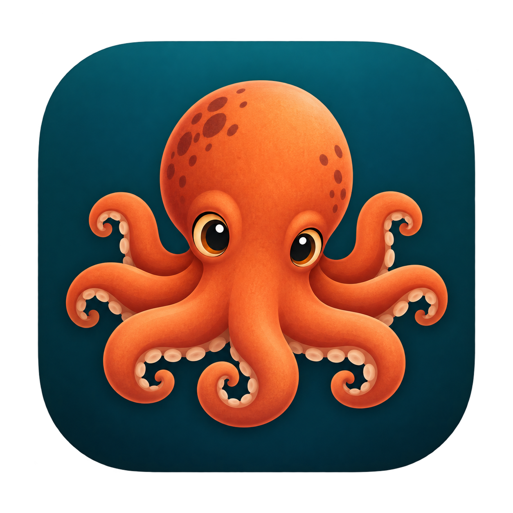

FIELD NOTES / INTERACTIVE EXPLORER
Octopus Controller
Eight arms. Local decisions. Emergent behaviour.
THE EXPERIMENT
Original demonstration
Eight independent arms
Select an arm to inspectHOW TO EXPLORE
A destination, not a choreography
The central controller assigns destinations. Each segment turns using its own position and a request from its neighbour. Watch a new instruction travel along an arm, or place an obstacle in its path.
Feel & respond
Segments sense nearby circles. Two adjacent contacts held for a quarter-second can establish a grip on food.
Hold & carry
When an arm holds food, its next destination moves the food. Retract brings it towards the body; Release leaves it in place.
This is an illustrative control experiment, not a biological reconstruction. Local rules can become trapped. The body and other arms do not act as collision obstacles; grasping models a rigid attachment, not friction or muscle forces.
In memory of Charles, an octopus with his own ideas about experiments. Read his story ↗
Keyboard shortcuts & further reading
Within the explorer, outside editable controls: 1–8 select an arm; Space play/pause; N step; D restart; R reset arm; X idle; T retract; G release; F/O place food/obstacle; Delete delete selected object. Tab moves normally between controls.